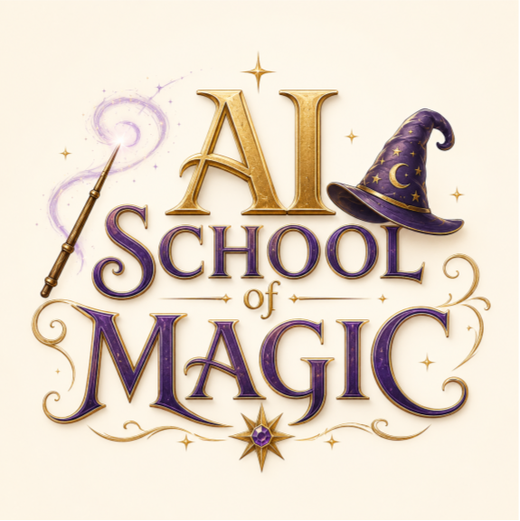
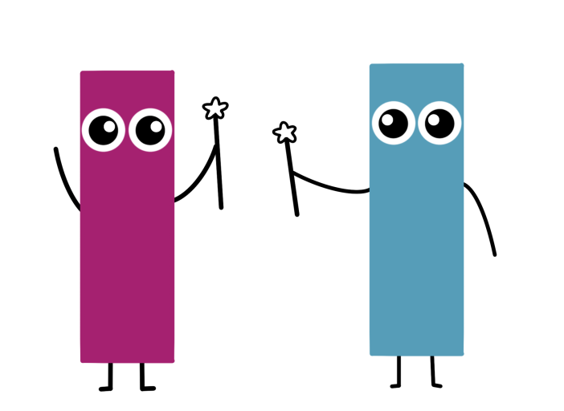
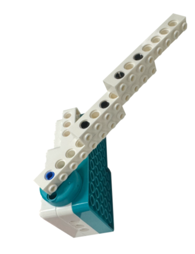
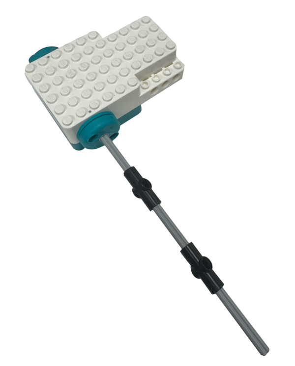
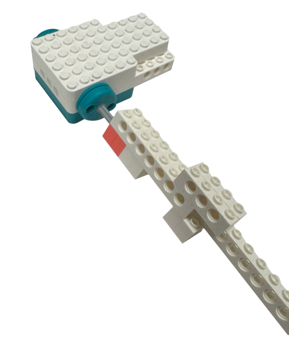
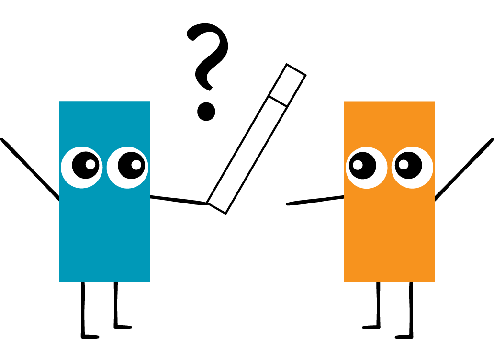
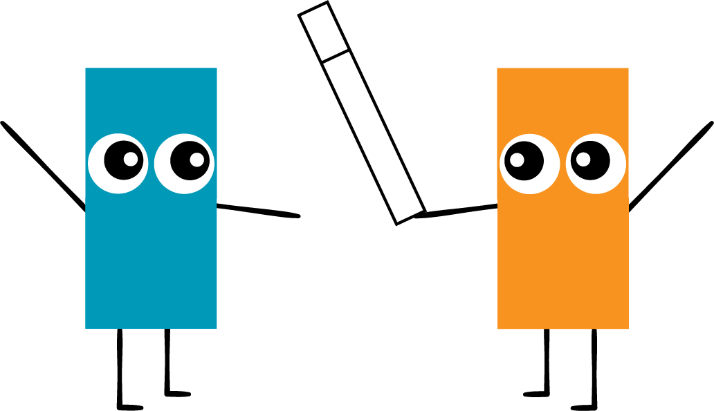

⚠️This browser can't connect to the wand.
Web Bluetooth is needed to talk to the LEGO hub, and it's only available in Chrome or Edge on a
computer or Android phone — not Safari, not iPhone/iPad, not Firefox. Every lesson on this page
needs the wand's real motion sensor, so please reopen this page in Chrome or Edge to continue.

✨ Magic Wand
Teach your LEGO® wand to recognize spells using its built-in motion sensor.
AI isn't magic — but it can look like magic until you understand it.
Challenge
Build a magic wand and create different types of spells!

Think like an engineer
What motions are the easiest / hardest to tell apart?
Think like a data scientist
How many examples do you need for good accuracy?
💡 Building Ideas



Hardware checklist
Double Motor is charged and powered on.
Double Motor is attached to your wand's
housing/handle securely, oriented consistently
(pick a "forward" direction for the wand tip and stick
with it — it makes gestures easier to repeat the same way
each time).
Press the double motor light/button to make it blink and
tap your connection card. The light will turn the color of
your card. This makes it easier to tell apart from the
other Double Motors when you go to connect it.
Now press the double motor light/button again. It
should stay the color of your card, but blink and beep. Now
it's ready to connect with the yellow "Connect" button in
the top left of this website!
Tips & Tricks
If the Bluetooth connection keeps failing, try moving the Double Motor closer to your computer,
away from other Bluetooth devices in the room.
The light needs to be blinking and beeping before it'll show up in the browser's device
picker — one press just sets the color, the second press arms it for connecting.
Pick a wand grip you can hold the exact same way every time. Inconsistent grip is the #1 cause of
"spell not recognized" later on.
Lesson 1: Teach Your Wand a Spell
AI isn't magic — but it can look like magic until you understand it.
Challenge
Teach your wand to recognize one spell, just by showing it examples!
Think Like a teacher
How many examples does a student need before they really learn something?
Think Like a scientist
What happens to accuracy if your examples don't look like each other?
You are going to show the AI several
examples of ONE spell — "Fireball". Hold the button below, do
your Fireball motion with the wand, then let go. Do this 6-8
times, trying to repeat roughly the same motion.
Step 1: Record examples
Step 2: Train the wand
Click the training button once - you'll see a message in the Logs window to the right that confirms it's working. If you want to start over, click the "Clear Training Data" button in the left sidebar.
Step 3: Try casting it!
Train the wand to try casting.
Compare your examples
Every recorded example, lined up on the same real-time
clock (not stretched to match) — this is the raw motion data the AI is learning from. A dashed black line
shows your most recent test cast. Do your examples look like each other? Does your test cast look like
them? If some lines sit flat for a while before the spike, that's dead time at the start of the
recording — holding the button a beat before actually casting.
Record some examples to see them compared here.
Tips & Tricks
If your cast never gets recognized, try lowering the Recognition threshold slider a little before
deciding your training data is the problem.
Look at the "Compare your examples" chart — if your lines don't overlap much, that's likely why
training or recognition isn't working well.
Hold the button a beat before you start moving, and let go right after you finish. Extra dead time
at the start or end makes each recording harder to match.
Lesson 2: Can Your Friend Use It?
AI isn't magic — but it can look like magic until you understand it.
Challenge
Can your friend use your gesture to do your spell?

Think Like a programmer
How many new examples from your friend will you need?
Think Like a dancer?
What makes two movements the same from different bodies?
Hand the wand to a friend — someone who never trained it. Do NOT retrain anything on
this page. Just see how well the spell YOU taught it works for someone else. This is where AI bias shows
up: a model trained on only one person's motion may not generalize to everyone.
Results
Tester
Recognized?
Confidence
No attempts yet.
Tips & Tricks
It's normal for a friend's spell to fail here — that's the whole point of this step, not a bug.
Don't retrain after a failed attempt. The low accuracy IS the data you need for Lesson 3.
Try a few different testers if you have them. One low score could be a fluke; three low scores is
a pattern.
Lesson 3: Improve It — Data Bias
AI isn't magic — but it can look like magic until you understand it.
Challenge
Fix the bias — retrain your wand so it works for your friend too!

Think Like an engineer
Did adding a few examples fix it, or do you need a lot more?
Think Like a teacher
Is one friend's data enough, or should you ask a whole group?
Fine-tune the model: add your friend's Lesson 2 attempts into the training set, then
retrain, then test again. Does the wand recognize your friend's spell better now? This fixes who's
represented in the training data — Lesson 4 tackles a different kind of data problem.
Test again
Tester
Recognized?
Confidence
Before vs. After
Before: --
After: --
Tips & Tricks
Compare the Before/After bars carefully — if After isn't much higher, adding more of your friend's
examples (not just one) may help more than retraining again on the same one.
Retraining doesn't erase your original examples — it just adds the new ones to the mix.
If accuracy barely changes, it might not only be a "diversity" problem — check whether Lesson 5's
data cleaning issue is also present.
Lesson 4: Who Cast It?
AI isn't magic — but it can look like magic until you understand it.
Challenge
Can the AI tell you and your friend apart, just by how you both cast the same spell?
Think Like a detective
What clues would give away who's casting, even if the spell looks the same?
Think Like a privacy researcher
If AI can recognize how you move, what else could it learn about you without asking?
This reuses the casts you already recorded in Lessons 1 and 2 — no new
recording needed to train. This time the AI isn't learning "is this a Fireball?" — it's learning
"whose Fireball is this?"
Step 1: Train the identity classifier
Uses your Lesson 1 examples plus every friend
test cast from Lesson 2 — the more casters and casts you have, the better this works.
Step 2: Test it
Results
Actual caster
AI's guess
Confidence
Correct?
No attempts yet.
Tips & Tricks
If training says you need more casts, that's the point — go back to Lesson 2 and record a
few more attempts (yours or a friend's) rather than treating it as an error.
Type the caster's name exactly the way you did in Lesson 2's "Tester's name" field, or the
"Correct?" column won't match even when the AI's guess was right.
If the AI keeps confusing two people, try casting more differently from each other on
purpose, then retrain — see if that makes the two easier to tell apart.
Lesson 5: Improve It — Data Cleaning
AI isn't magic — but it can look like magic until you understand it.
Challenge
Clean up your training data — trim the dead time before the real spell begins!
Think Like an editor
How do you decide where the "real" motion actually starts?
Think Like a data scientist
Could cleaning data help even more than adding more of it?
Even good training data can be messy. If you held the button for a moment before
actually casting, your recordings include "dead time" at the start — flat, motionless samples that don't
represent the spell at all. This fixes how clean each individual recording is, a different problem
from Lesson 3's data diversity fix.
Step 1: Review the suggested crop points
Each example below shows a suggested starting point
(the app's best guess at where the real motion begins), shaded red for the part that would get trimmed
away. Drag the marker directly on the chart, or use the slider underneath it, to move the start point —
for keyboard users, the slider is fully operable with arrow keys.
Click "Load My Examples" to see each recorded example with a suggested crop point.
Step 2: Apply and retrain
Step 3: Test again
Attempt
Recognized?
Confidence
Before vs. After
Before: --
After: --
Tips & Tricks
The suggested crop point is a guess, not a rule — trust what you see in the chart over the
automatic suggestion if they disagree.
Cropping too aggressively can cut off the real spell motion, not just the dead time. If accuracy
gets worse after applying crops, try dragging the marker back a bit.
You can revisit "Load My Examples" any time to re-check your crops before retraining again.
Save Examples
Saves Lessons 1-5's raw recordings (Fireball examples + friend test
casts) to a file so you can pick up next class. Trained models and result tables aren't saved — click
Train/Retrain again after loading.
Class 2, Lesson 1: Discover Hidden Magic Styles
AI isn't magic — but it can look like magic until you understand it.
Challenge
Let the AI find its own groups — no labels, no hints!
Think Like a scientist
How would you group the motions if a computer couldn't help you?
Think Like a detective
Can you guess how many hidden groups there are before the AI tells you?
Unsupervised learning: record several different mystery motions — don't tell the AI
(or each other!) what they're supposed to be. A teacher can secretly assign 2-3 different motions across the
class. Then let the AI find its own groups, with no labels at all.
Step 1: Record mystery motions
Step 2: Combine with classmates (optional)
To find patterns across the whole class, everyone's
mystery motions need to end up on the same page. Each person records on their own wand/laptop, exports
their motions as a file, then hands that file to whoever will run "Find Patterns" (Google Drive, your
classroom app, email — however files normally get handed in) — that person imports everyone's files
before moving on to Step 3.
Optional: Clean Up Your Mystery Motions
Same idea as Lesson 5's data cleaning: if you held the button for a moment
before actually moving, that dead time is part of every mystery motion's recorded shape too — and
k-means compares shapes, so it can throw off which group a motion lands in. This step is optional
because k-means is often fine without it; try "Find Patterns" first; only bother with this if the
groups look messier than you'd expect.
Click "Load My Mystery Motions" to see each recorded motion with a suggested crop point.
Step 3: Find the patterns
Each dot is one recorded motion, colored by which group the AI put it in. Position shows a simplified
2D view (how big vs. how twisty the motion was) — the AI itself actually compares the full motion shape,
not just these two numbers.
No patterns found yet.
Tips & Tricks
Try to make each mystery motion clearly different from your others — very similar motions are
harder for the AI (and you) to tell apart on the scatter plot.
If the "Number of groups" slider doesn't match how many groups you actually recorded, try a few
different values and see which one splits the dots most cleanly.
The 2D scatter plot is a simplified view — two dots that look close together might actually
represent fairly different motions.
Class 2, Lesson 2: Make New Spells
AI isn't magic — but it can look like magic until you understand it.
Challenge
Turn the AI's discoveries into brand-new spells you can cast!
Think Like a wizard
What would you call a motion the AI grouped together, before you even tried it?
Think Like an engineer
How would you test that your new spell actually works reliably?
Use the groups the AI discovered in Lesson 5 as brand-new spell categories. Give each
group a name, save them, then cast your new spells — the wand will light up and beep differently for each
one it recognizes.
Cast your new spells
Name and save your spells to try casting.
Tips & Tricks
Give each spell a name before saving — you can always rename and re-save later if you change your
mind.
If a spell isn't being recognized, go back and check whether Lesson 5 grouped that motion cleanly,
or if it overlapped with another group.
Cast slowly and deliberately at first, then try a fast or sloppy version — see whether the wand
still finds the right spell.